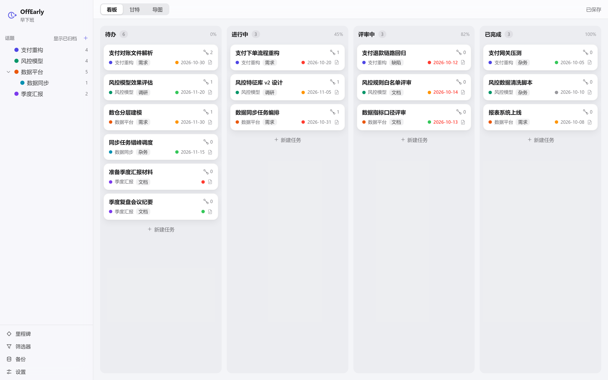
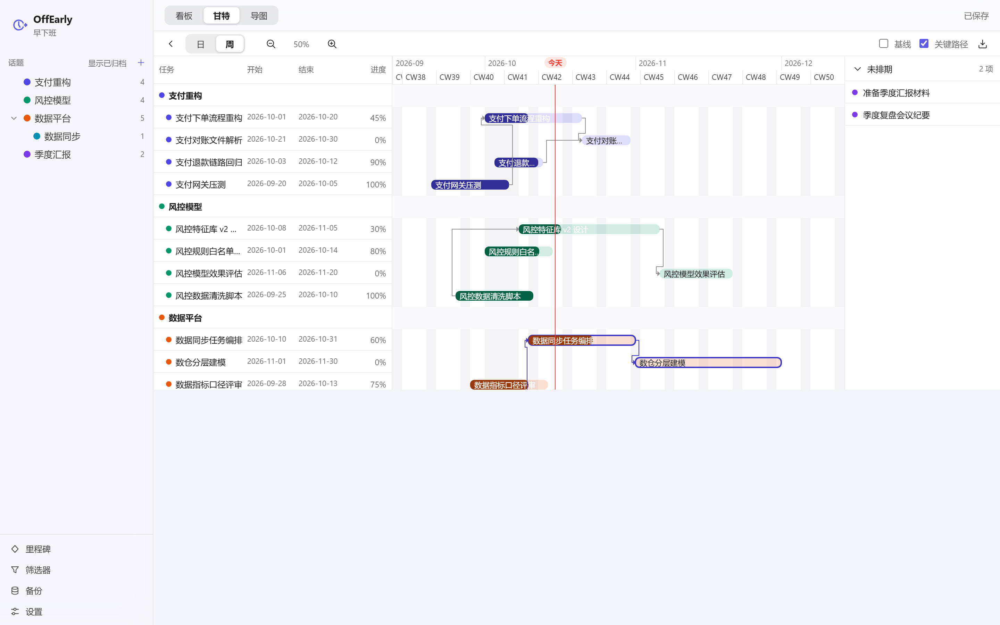
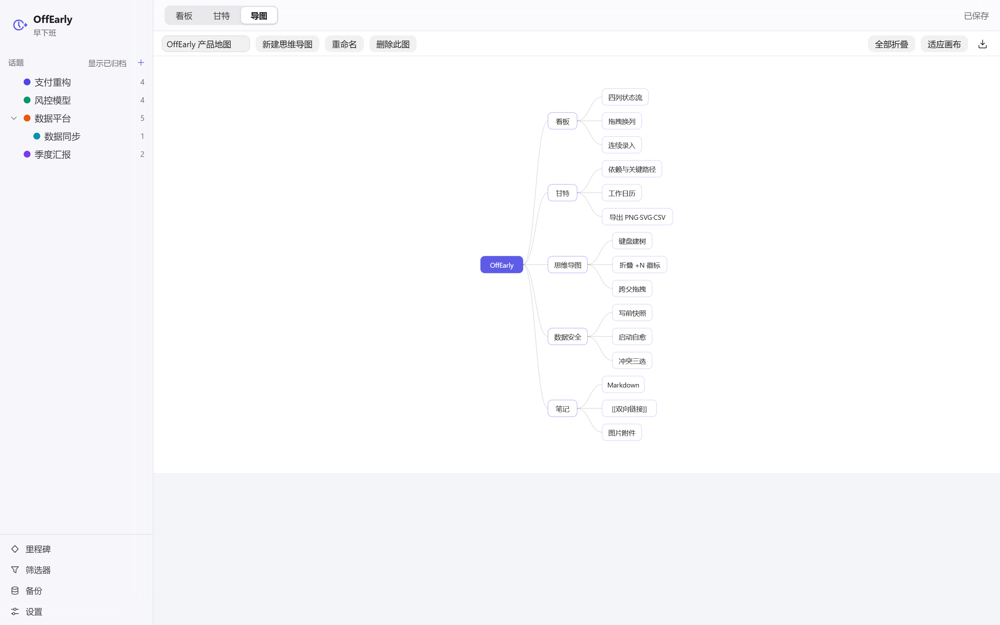
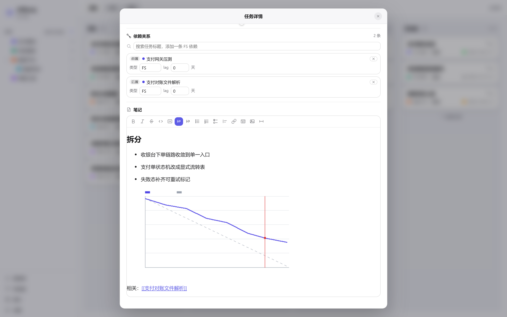

单文件 · 离线 · 数据自持
把事做完，
早点下班。
看板、甘特图、思维导图装进一个 HTML 文件。不联网、不装东西、不交数据——点开就能用，资料全在你自己选的文件夹里。
约 1.1 MB无需安装无需账号Chrome / Edge 113+

三个主张
它只做三件事：
不去麻烦别人。
零外部请求——没有外链的脚本、样式、字体和图片。断网、飞行模式、内网隔离环境，照常打开。
一个 HTML 文件，双击就跑。没有安装包，没有依赖，不需要管理员权限，也不用求运维开白名单。
没有账号、没有云端、没有遥测。数据只写进你本机上选定的那个文件夹，拷走文件夹就是全部。
视图 · 甘特图
谁挡着谁，
一眼就看见。
- 依赖箭头画出前后置关系，关键路径自动描蓝，不用自己算。
- 工期由工作日历决定——周末、法定假期、调休补班都算得进去。
- 任务条上直接写任务名，进度推过一半自动翻成白字；导出的图里名字也在。
- 左侧任务表、右侧未排期面板都能折成竖轨，把画布让给图本身。
- 导出 PNG / SVG / CSV，范围可选「仅可见区」或「全时间跨度」。

视图 · 思维导图
不碰鼠标，
把一棵树敲出来。
| Tab | 加子节点 |
|---|---|
| Enter | 加同级（根上无效） |
| F2 | 就地改名，Enter 提交 Esc 取消 |
| Space | 折叠，右缘出现 +N 徽标 |
| ↑↓←→ | 树上游走：兄弟、父、首子 |
| Delete | 删除节点（中心主题受保护） |
- 按住拖过 4px 即改挂到落点之下，中心主题也是合法落点。
- 拖空白处平移，Ctrl+滚轮缩放 50%–300%。
- 导出的是当前显示画面——折叠着导出的就是折叠图。

一处改完
五个分区，
一张弹窗。
- 标题 · 属性 · 日期与进度 · 依赖关系 · 笔记，不用在页面之间跳。
- 依赖用模糊搜索建链，类型与 lag 可改；成环标红但仍允许保存。
- 笔记是 Markdown：图片粘贴拖入即存进
assets/，[[双向链接]]点了就跳。 - 状态改成「已完成」，进度自动锁到 100%。
- 改动即时生效，Ctrl+Z 随时回退。

守得住
数据在你手里，
也得对得起这份信任。
写前快照
每次保存前，当前 vault.json 会被逐字节复制进 .backup/。不需要你手动备份，也不占第二次写盘。
启动自愈
库文件损坏或校验不过时，应用停止一切写入，自动回退到最近可用快照，进入只读安全模式并挂出横幅。
冲突三选
磁盘被另一端改过时，保存会问你：以我为准 / 以磁盘为准 / 导出我的副本。弹窗会先告诉你「以磁盘为准」会丢掉几条任务。
随时可走
vault.json 是纯 JSON，任何编辑器都能看能改。没有私有格式、没有加密锁、没有导出付费。
怎么开始
三步，然后就可以干活。
打开
点上面的「打开在线版」，或者把那个 HTML 文件下载到本地双击——两条路跑的是同一份代码。
连接文件夹
选一个空目录，确认在此建库，会一并建好 assets/ 与 .backup/。已经有库的目录只会被打开，不会被覆盖。
直接干活
改动自动保存，右上角三态指示：已保存 / 未保存 / 保存失败，失败可点重试。要立刻落盘按 Ctrl+S。
想先看看有数据长什么样：连接仓库里的 example.vault/——5 个话题、15 个任务、3 个里程碑、7 条依赖、1 张配图笔记，覆盖四种状态加逾期、被阻塞、未排期。